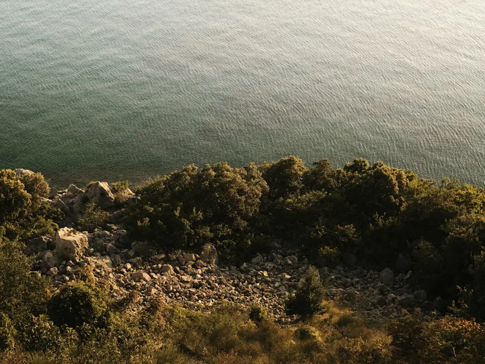

For homeowners comparing retaining walls sunshine coast options, the useful starting point is not material preference but height, ground, drainage, approval pathway and what sits above the wall.
Retaining Walls Sunshine Coast Explained
Retaining Wall Sunshine Coast frames the local decision around ground first: a wall on the Blackall Range at Maleny and a wall on canal fill at Maroochydore are not treated as the same problem. That is a useful editorial lens for any owner comparing quotes, because the wall face is only the visible part of a system that also has to manage soil, water and whatever load sits above it.
The quote discussion should identify height, length, the slope behind the wall, any driveway, building, pool, fence or neighbour impact above it, and the site access available for excavation. The source page is blunt about order: height, what sits above the wall, ground and drainage come before material. That prevents a cosmetic choice from driving a structural decision.
- Ask whether the price is based on square metres of wall face.
- Ask what drainage is included behind the wall.
- Ask whether engineering, certification or council approval is expected.
- Ask what is excluded from the indicative cost band.
Material Choice Is A Site Decision
The published service list covers concrete sleeper, timber sleeper, besser block, rock and boulder, gabion, drainage systems, engineered walls and repair or replacement work. Those categories are not interchangeable decorations. A concrete sleeper wall between galvanised posts is described as a common replacement option, while timber sleeper terraces are positioned for low garden falls. Core-filled besser block is tied to taller, rendered and engineered jobs.
For larger rural or sloping sites, the page describes rock walls as battered back into the slope where there is room behind the face. Gabion baskets are linked with scour and surface runoff on erodible ground. The shared detail is subsoil drainage, with ag drain, gravel and geofabric named as part of the drainage conversation behind every wall.
Readers wanting a second crawl path can compare this related Sunshine Coast retaining wall guide, but the same caution applies: choose the system after the site conditions are known, not before.
Approvals And Certification Questions
The source guide says Sunshine Coast Council requires a building permit before construction, modification or repair of most retaining walls. It also says council acts as concurrence agency for walls over 2 metres. Those statements make approvals a quote-stage issue, not an afterthought once excavation has started.
For taller or loaded walls, the page points to AS 4678 design and RPEQ certification using Form 15 for design and Form 16 on inspection. It also states that QBCC licensing is triggered by the value of building work, not by wall height. That matters when owners are comparing a landscaper, bricklayer, mason or excavation contractor for what may actually be structural retaining work.
- Confirm whether the wall is new work, a modification or a repair.
- Identify whether the wall is over 1 metre or carries a surcharge.
- Ask who arranges engineering, permit paperwork and inspections.
- Keep certification documents with the property file after completion.
Costs Need The Same Measuring Stick
The clearest cost clue in the source text is the wall-face method. Height multiplied by length gives the area being retained. A wall 1.2 metres high and 10 metres long is 12 square metres of face, so comparing only the 10 metre length can hide a major difference between two jobs.
The quoted indicative bands are around $150 to $300 per square metre for rock and boulder walls, and $300 to $450 per square metre for timber sleepers. The page also notes that exclusions should be named. That means a useful quote should separate wall construction from engineering, approval costs, demolition, access constraints, drainage upgrades, spoil removal, fences and reinstatement where those items apply.
Repairs deserve the same discipline. A bulging, cracked or failing wall may need assessment before a repair price is meaningful, because the visible face may not reveal drainage condition, footing adequacy or surcharge behind the structure.
Who This Applies To
This guide is most useful for Sunshine Coast owners who already know roughly where a wall is needed but have not yet settled the wall type or approval path. It suits replacement walls, low garden terraces, engineered boundary retaining, hinterland slopes, coastal sand sites and repair questions where drainage and load need to be checked early.
It is less useful for readers seeking a finished design, a survey decision or a legal boundary opinion. Those questions need qualified site-specific advice. The practical aim here is to help an owner brief contractors consistently, recognise when engineering is likely, and avoid comparing quotes that include different scopes.
- Measure height and length before asking for budget guidance.
- Photograph what sits above and below the proposed wall line.
- Note the ground type described by the contractor during inspection.
- Ask for drainage, approvals and exclusions in writing.
- Measure the wall face. Record height and length so the quote can be compared by square metres of retained face.
- Describe the load. Tell the contractor what sits above the wall, including fences, driveways, buildings or steep ground.
- Ask about approvals. Check whether the job needs engineering, building approval, council concurrence or inspection documents.
- Confirm drainage scope. Ask for ag drain, gravel, geofabric and outlets to be described in the written scope.
| Option | Where it is described as fitting | Key question to ask |
|---|---|---|
| Concrete sleeper | Replacement work and cut-and-fill blocks | Are galvanised posts, drainage and access included? |
| Timber sleeper | Low garden falls and terraces | Is the treatment grade and expected use suitable for the site? |
| Besser block | Taller engineered and rendered work | Who provides engineering and certification? |
| Rock or boulder | Acreage and slopes with room behind the face | Is there enough room to batter the wall back? |
| Gabion | Scour, runoff and erodible ground | How will water move through and around the baskets? |
This guide covers Sunshine Coast retaining wall choices, quote inputs, drainage, engineering triggers and approval questions for owners preparing a practical brief.